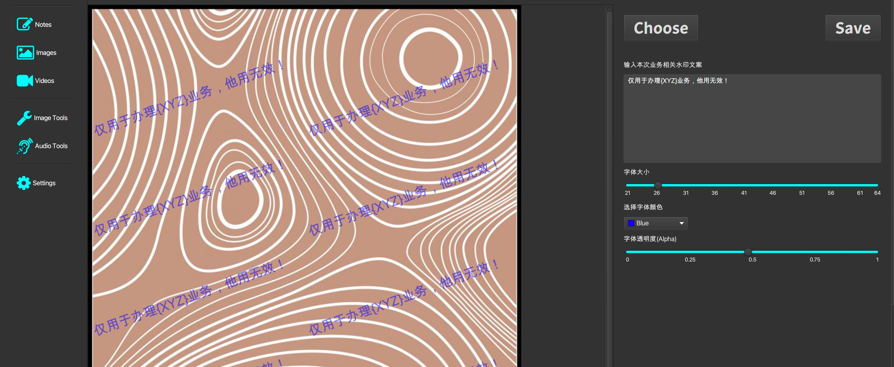

养身式编程 为哪般？
王福强
今天有人在外面的微博上说我是“养身式编程”， 我倒是挺喜欢这个词儿的，哈哈，因为这倒是从某个层面印证了我天天晒编程阶段性成果的“功效”：
- 我只是打造工具，“吃自己的狗食”（Eat My Own Dog Food），所以，确实是随心所欲，想搞啥搞点儿啥，养身式编程即此；
- 表面是养身式编程，实际上，我只是在通过日常的这个事情来提醒自己，“一件事情要做好，需要投入的心力和精力是很大的”，不要忘本；）
- 商业上的目的，我在《福鱼画册》里也提到了， 养身式编程的背后对应的只是第一阶段的慢慢磨，第二阶段的涉猎和探索会在合适的时机再去做；
当然，我也提前知道，很多人会把这些表象当成个人的形象定位，事实也说明了这个最初的预想，因为有不止一位之前的熟人找我做外包，但我想说，我不做外包，这是个什么生意，需要什么资源和组织方式，我心里清楚，在《技术、商业与人》里应该也说清楚了，所以我不做外包，我不会傻到把自己的价值拉低到那个层次去竞争，请别误会。（不过，如果你有工具场景，欢迎一起交流看有没有合作机会，因为我现在只想做一家“土”公司）
今天也养身式地编程了一把，确切地说，构思其实是从昨天就开始的， 今天好不容易做了五六版才勉强符合预期。
因为这阵子在看图像和Steganography等相关领域的内容，看到一个给身份证加水印的web工具，就想移植(port)一个到本地，毕竟我有自己的KEEBOX嘛， 也便于后面如果什么时候办业务，需要身份证的时候，加个明水印也可以尽量减少因为数据泄露而造成的安全隐患。
一开始设想的挺好，在身份证图片上直接新开一个图层，直接画，后来具体养身式编程的过程中发现，JavaFX的GraphicsContext比较弱(感觉AWT时代的Java2D都比它强)，当我要实时绑定各种状态并反映到字体、字号、颜色、透明度等属性的时候，只能画字符串显然太命令式编程了（imperative programming），所以，退而另寻他途，总之，在细节上试错了n多次之后，才基本上搞定这个初看起来很容易（Fucking Easy）， 但实际干起来很琐碎的功能，这里是几个时间节点的残废效果：

最终用测试图片生成的效果：

当然， 还是有很多待改善的地方，现在充其量只是make it work，但要改善各种细节，又是巨大的心力和精力的投入。 我之前说过，一个图片的布局就能看出某团队在其一点的巨大投入，更不要说整个一个完善的商业产品了。
急躁、道德绑架、压迫，都不是创造与创新的源泉，自由、专注与喜爱才是， 与各位共勉：）
「为AI疯狂」星球上，扶墙老师正在和朋友们讨论有趣的AI话题，你要不要⼀起来呀？^-^
这里
- 不但有及时新鲜的AI资讯和深度探讨
- 还分享AI工具、产品方法和商业机会
- 更有原价1000多的付费内容(近500分钟)等着你，加入星球(https://t.zsxq.com/0dI3ZA0sL) 即可免费领取!